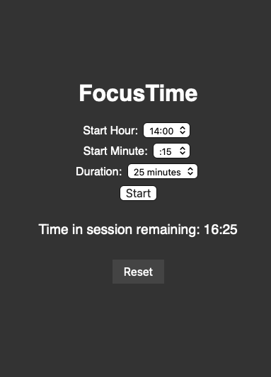
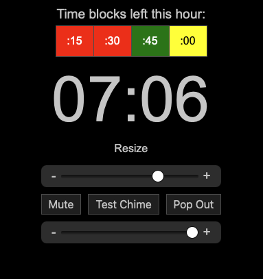

FocusTime (new!)
A clean, color-coded session timer made to complement Focusmate and keep you in sync.

FiftyFlow (new!)
A customizable Pomodoro-style break timer for 50 minute flow states and 10 minute recovery.

TimeDrift
A visual timer that stays in sync with real-world time blocks. Perfect for short sprints or timeboxing.